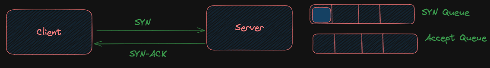
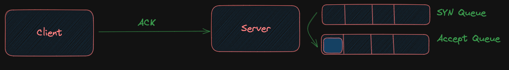

Webserver and Kernel Interaction
In this blog we see how a webserver or any other such process picks up connection from the kernel and serves it?
{kind=link}
NIC card is where the connection is received and convertion happens from physical layer (Electricity etc) to data link layer (Binary digital) signals. This can be a ethernet port or a wifi port. Once the data is inside, it is processed at other layers by kernel networking stack.
Every webserver implemnets the accept() (2 in diagram) method which actively waits for an incoming connection and is a blocking system call.
The accept method is implemented as an infinite loop, where each incoming connection is immediately assigned to a thread. This allows the next connection in the queue to be processed without delay.
The method returns a socket once a connection is established. Socket is a unique combination of (client(IP+ Port) and server(IP + Port)). so its always unique for a particular client. Socket can also be called file desriptor. Which is then used by the system to read/write data specific to a particular client.
Kernel
Kernel networking funtionality is provided by kernel networking subsystem that creates a syn and accept queue.
- Syn queue is for connections which are still handshaking.
- When the syn queue is full the incoming connections will be discarded at the kernel level. This typically happens under heavy load or during a denial-of-service (DoS) attack.
- and accept queue is for the established connections.
The websever process than picks a item from the accept queue and provides it to a thread to work on it.
Thread pools are used for handling multiple connection rather than creating infinite no of threads. as it might overburden the system.
- In case of a thread pool, there is a set no of already created threads. connecions are then each assigned these threads.
Kernel is responsible for delivering the packets received at the hardware interface to the respective processes based on the incoming port no. That is what port does, it helps identfy the process to deliever packets to.
When a connection is started a syn msg in sent at the start of tcp connection.
- the connection is added to the syn queue.
- 
- the kernel then sends a syn/ack and then receives an ack
- once the ack is received the item is moved from syn queue to accept queue.
- 
- This accept queue is the one where the backend apps gets the connection/socket from and then start working on that.
{kind=link}
{kind=link}
There are two types of sockets involved here:
- Listening socket: which is bound to ip address and port. eg a server listening on port.
- Client socket: This is created and returned by the accept method for a specific client.
Thank You!